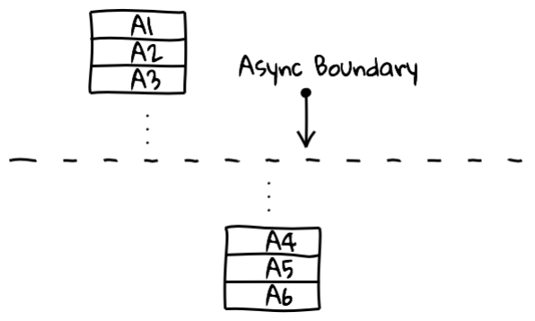
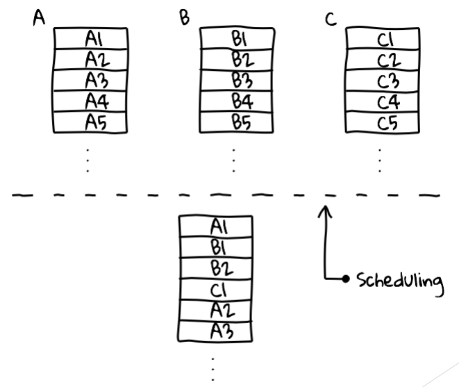
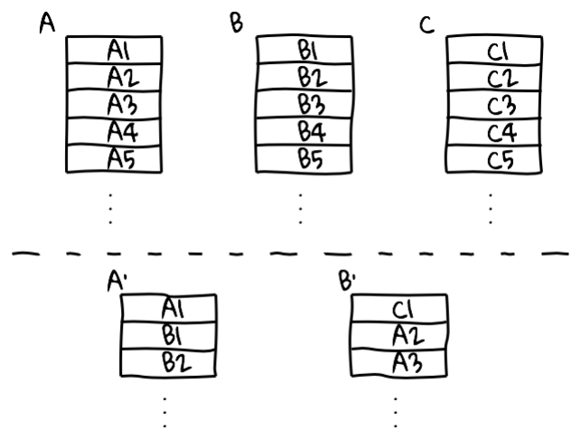
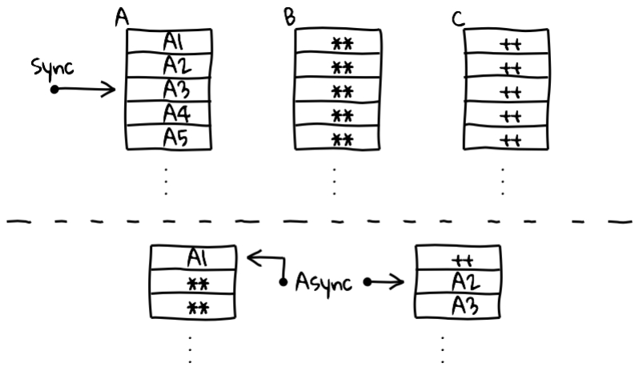
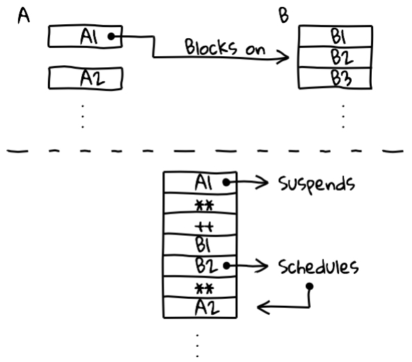
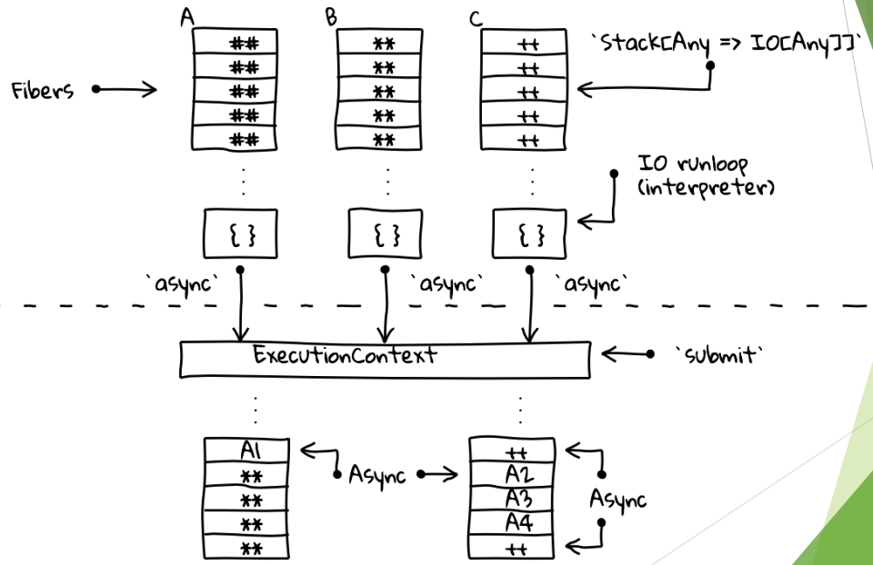

Часть 11. Cats Effect & Http4s
Страничка курса: https://maxcom.github.io/scala-course-2022/
Добрый день.
Это 11 лекция курса по программированию на языке Scala.
На этой лекции мы проведём обзор двух библиотек из экосистемы Typelevel: cast-effect и http4s.
План
Эффекты
IO vs Future
Http4s
В начале мы познакомимся с понятием эффектов в программировании.
Далее рассмотрим монаду IO, которая предлагается в библиотеке cats-effect как альтернатива для стандартного Future, и сравним их между собой.
В конце лекции сделаем быстрый обзор на минималистичный сервер http4s, который очень прост в использовании и отлично сочетается с cats-effect.
Чистая функция
Является детерминированной
Не обладает побочными эффектами (side-effect)
Считается, что в идеальном функциональном мире любая функция должна быть чистой
(т.е. детерминированной и не обладать побочными эффектами).
Напомню, что детерминированность означает, что сколько бы раз вы ни вызывали функцию,
на одних и тех же входных данных она будет давать всегда один и тот же ответ.
Теперь давайте вспомним, что такое побочные эффекты.
Побочный эффект
Создание или изменение файла
Запись данных в базу
Изменение глобальной переменной (увеличение счётчика)
Модификация переданной в функцию переменной
Изменение своего дальнейшего поведения
Вызов внешней функции, имеющей любой из перечисленных выше эффектов
Чистые функции - это хорошо?
Так почему же чистые функции - это хорошо?
Как правило, наличие side-effect-а влечёт за собой нарушение детерминированности.
Но бывает и что-то одно: только детерминированные функции без side-эффектов.
Например, функция random или функция получения значения из какой-то глобальной переменной. Или функция чтения из базы данных или файла.
И наоборот, функции с side-эффектами, но при этом детерминированные. Например, функция print, которая всегда возвращает 0.
Чистые функции
Делают код более предсказуемым
Решают проблемы многопоточности
Позволяют кешировать результат
Можно менять местами последовательность вызова двух чистых функций
В любом случае функции, не являющиеся чистыми, делают поведение программы труднопредсказуемым и не однозначным.
Начинают вылезать странности при одновременном вызове одной и той же функции в нескольких потоках.
Например, когда несколько пользователей запрашивают что-то у сервиса, то могут получить различные результаты в зависимости от порядка выполнения запросов.
Реализовывать асинхронные программы становится сложнее, потому что результаты одного потока могут зависить от выполнения другого потока.
Все эти проблемы решаются чистыми функциями.
Более того, чистые функции позволяют кешировать результат и заменять вызов функции на значение её результата.
А ещё можно смело менять последовательность вызова таких функций не опасаясь за результат.
Но что же делать, если почти всегда "полезными результатами" работы программы являются какие-то побочные эффекты?
Ведь вся цель написания программы - это выполнить какие-то действия и что-то поменять в окружающем мире!
Resource
Внешний относительно функции объект,
(не обязательно побочными эффектами
Здесь на помощь приходит понятие "ресурса".
Это некоторый "внешний" относительно функции объект, который может менять своё состояние с течением времени.
Например, это может быть тот же файл на диске, база данных, глобальная переменная, консоль ввода-вывода, какая-нибудь стейт-машина.
В итоге всё сводится к тому, чтобы максимально локализовать работу с ресурсами и
обеспечить безопасное использование ресурсов несколькими потоками.
Методы для работы с ресурсами стоит рассматривать как единичное и неделимое действие,
а в конце этих действий нужно полностью освобождать ресурс
Методы для работы с ресурсами лучше всего рассматривать как единичное и неделимое действие,
а в конце этих действий нужно полностью освобождать ресурс.
Вся остальная программа при этом состоит из чистых функций, из которых разработчик проектирует как из кирпичиков,
и обращение к ресурсам становится максимально похоже на эти кирпичики.
При таком подходе работа с ресурсами становится гораздо более предсказуемой и максимально близкой к чистым функциям,
с тем лишь исключением, что остаётся некоторый "внешний эффект":
Например, записанные в этот ресурс данные или изменённое состояние ресурса.
Заметим, что, текущее состояния объекта можно рассматривать, как некоторую информацию, которую этот объект содержит.
Поэтому нет никого смысла рассматривать этот случай отдельно.
Cats Effect
https://typelevel.org/cats-effect
С тем, что такое эффекты и как с ними лучше работать мы разобрались.
Теперь давайте посмотрим, что нам предлагает библиотека cats effect.
Cats Effect
"Высокопроизводительная асинхронная компонуемая платформа для создания приложений в чистом функциональном стиле"
Вот какое определение красуется на главной странице ресурса:
Cats Effect - это "Высокопроизводительная асинхронная компонуемая платформа для создания приложений в чистом функциональном стиле".
Она предоставляет инструмент, известный как «IO монада», ...
IO monad
Безопасное использование и управление ресурсами
Типизированность
Параллельность (Fiber - легковесные потоки, управляемые средой выполнения)
Асинхронность (callback-driven) или синхронность
Конечное или бесконечное время выполнения
... который позволяет управлять эффектами и следить за жизненным циклом ресурсов, безопасно выделять и освобождать их.
При этом эффекты могут быть как асинхронными (т.е. вызывать callback-функцию по окончании действия)
так и синхронными (т.е. непосредственно возвращающими значения).
Параллелизму здесь способствует понятие "волокон",
которые представляют собой легковесные прерываемые потоки, полностью управляемые средой выполнения.
Это вольный перевод, в оригинале они называются: Fiber.
Эти волокна намного дешевле, чем нативные потоки операционной системы, поэтому можно создавать их в огромном количестве.
Интересной особенностью IO-монады является её способность не только выполнить какое-то действие и вернуть результат, но и выпоняться бесконечно.
Дальше мы увидим подобные примеры.
Стоит также сказать, что IO-монада является типизированной, но этим уже мало кого удивишь.
IO vs Future
Несмотря на внешнее сходство с Future, IO имеет несколько существенных отличий,
которые заметно расширяют возможности разработчика контролировать поведением асинхронных вычислений.
Чтобы увидеть это, давайте глубже познакомимся с синтаксисом
object Future {
def apply[A](body: => A): Future[A]
} object IO {
def apply[A](body: => A): IO[A]
}
Для начала посмотрим на конструктор.
На первый взгляд, они абсолютно одинаковые: в обоих случаях мы передаёт тело функции как by-name параметр.
(т.е. оно будет выполнено только в момент непосредственного использования).
Но внутри Future сразу запускает вычисление и возвращает некоторую сущность,
которая по окончании вычисления будет содержать полученное значение.
В дальнейшем мы можем обращаться к ней несколько раз и получать это значение.
IO действует иначе.
Возвращается контейнер с функцией, но вычисление ещё не запускалось.
Оно будет запущено только когда мы попытаемся получить значение.
При этом если мы будем обращаться к значению несколько раз, то оно будет вычисляться заново!
Eagerwith Memo Lazywith Memo Lazywithout Memo
Sync valA
lazy val() => A
def() => A
Async Future[A](A => Unit) => Unit
IO[A]() => (A => Unit) => Unit
Можно провести аналогию с val и def:
val сразу вычисляет значение и возвращает его, сколько бы раз мы не обращались.
def вычисляет только при обращении, причём делает это каждый раз.
В случае future и io происходит тоже самое, но вычисляется в другом потоке.
Таким образом, в отличие от Future, IO представляет собой ОПИСАНИЕ куска программы, а не текущие вычисления.
Это дает полный контроль над тем, как и когда будут выполняться эффекты.
Простые программы могут быть использованы для составления более сложных программ,
сохраняя при этом своё поведение и сложность.
Работа с Future при написании программы напоминает попытку собрать сложное устройство из заранее запущенных механизмов.
Если делать запустить сразу много потоков, или действовать неаккуратно,
можно легко получить проблему и непредсказуемый результат.
IO позволяет нам конструировать программу из действий, которые ещё не запущены,
но будут выполнены в дальнейшем по нашей команде.
IO evaluated at the "end of the world"
Обычно говорят, что IO запускается "at the end of the world
(т.е. подчёркивается, что мы сначала всё конструируем, а запускаем в самом конце)
val addToGauge = IO {
???
println("Added!")
}
val program: IO[Unit] =
for {
_ <- addToGauge
_ <- addToGauge
} yield ()
program.unsafeRunSync()
// Added!
// Added!
Вот как это обычно выглядит на практике.
Представьте, что у вас есть какие-то кусочки программы, завёрнутые в IO.
Например, кусок кода, который увеличивает счётчик и печатает сообщение об этом.
Воспользуемся тем, что IO - это монада, а значит у неё есть метод flatMap,
доступны различные трансформеры, которые позволяют "накручивать" конструкцию
и конечно же можно использовать красивый и наглядный синтаксис for.
Когда конструкция будет собрана, то в конце запускается метод run и получается результат.
Обратите внимание, что в данном случае метод print выполнился два раза.
Если бы мы использовали Future, то счётчик был бы увеличен только один раз.
def fib(n: Int, a: Long = 0, b: Long = 1): IO[Long] =
IO(a + b).flatMap { b2 =>
if (n > 0)
fib(n - 1, b, b2)
else
IO.pure(a)
}IO is trampolined in its flatMap evaluation
В случае с IO мы можем записать его в таком виде.
Здесь используется рекурсия, но не хвостовая: последним действием здесь является flatMap.
Для Future это вызвало бы Stack Overflow, но для IO такая конструкция допустима.
Trampolining
Основная идея – сделать, чтобы функция возвращала continuation
Что же такое trampoline и как это вообще работает?
Давайте вспомним, что при каждом вызове функции выделяется дополнительная память
(как минимум на переменные, передаваемые в функцию).
При глубокой рекурсии в стеке вызовов оказывается гораздо больше информации, чем он может вместить.
В итоге это вызывает "переполнение стека".
Хвостовая рекурсия решает эту проблему за счёт того, что последним действием вызывает сама себя
и это позволяет трансформировать её в цикл, а не создавать более глубокий стек.
Здесь идея похожая. Нужно сделать так, чтобы функция в итоге возвращала либо окончательный результат вычислений,
либо continuation. Это должна быть функция без аргументов, содержащую оставшуюся часть вычислений.
sealed abstract class IO[A]
case class Pure[A](a: A) extends IO[A]
case class Suspend[A](thunk: () => A) extends IO[A]
case class FlatMap[A, B](io: IO[B], f: B => IO[A]) extends IO[A]
Достигается это за счёт введения классов-наследников от IO.
Реализуется 3 вида наследника:
sealed abstract class IO[A] {
def flatMap[B](f: A => IO[B]): IO[B] = FlatMap(this, f)
def unsafeRun(): A = this match {
case Pure(a) => a
case Suspend(thunk) => thunk()
case FlatMap(io, f) => f(io.unsafeRun()).unsafeRun()
}
}
Теперь мы можем определить flatMap как метод, который всегда возвращает результат вычислений - объект класса FlatMap.
А метод запуска вычисления итоговой IO тогда будет выглядеть как pattern-matching.
На первый взгляд может показаться, что мы просто перенесли всю рекурсию из метода flatMap в метод run,
но если расписать внутренний вызов unsafeRun ...
def unsafeRun(): A = this match {
case Pure(a) => a
case Suspend(thunk) => thunk()
case FlatMap(ioA, f) => ioA match {
case Pure(a) =>
f(a).unsafeRun()
case Suspend(thunk) =>
thunk().flatMap(f).unsafeRun()
case FlatMap(ioB, g) =>
ioB.flatMap(g(_) flatMap f).unsafeRun()
}
}Получаем хвостовую рекурсию!
... то видно, что это не что иное как хвостовая рекурсия.
Это можно наблюдать на текущем слайде.
Разумеется, приведённый здесь код - это лишь упрощённый вариант реализации этих методов.
Здесь отсутствует обработка ошибок, не поддерживаются асинхронные эффекты и т.д.
Но он наглядно иллюстрирует как реализуется trampoline в Cats Effect.
IO API
Давайте теперь немного погрузимся в API, которое предоставляет библиотека.
object IO {
//side effect is not thread-blocking:
def apply[A](thunk: => A): IO[A] //alias for delay
def delay[A](thunk: => A): IO[A]
//side effect is thread-blocking:
def blocking[A](thunk: => A): IO[A] //uncancelable
def interruptible[A](thunk: => A): IO[A] //cancelable
def interruptibleMany[A](thunk: => A): IO[A]
}
Помимо стандартного конструктора, который принимает by-name параметром отложенное вычисление,
существуют и другие способы создать IO.
Например, метод есть метод delay, который имеет чуть более говорящее название, но на самом деле это просто его синоним.
Эти конструкторы подходят только для неблокирующих операций.
Для блокирующих нужно использовать либо конструктор blocking, который является непрерываемым,
Обратите внимание, что для прерывания interruptable будет предпринята только одна попытка,
Все перечисленные конструкторы имеют одинаковую семантику и отличие только в логике работы
(и, соответственно, в производительности).
object IO {
//was `async` in Cats Effect 2.x
def async_[A](
k: ((Either[Throwable, A]) => Unit) => Unit
): IO[A]
//generalized version for `cancelable` in Cats Effect 2.x
def async[A](
k: ((Either[Throwable, A]) => Unit) => IO[Option[IO[Unit]]]
): IO[A]
}
Если обычные IO .apply и .delay описывают операции, которые могут сразу же быть выполнены в том же треде и call-стеке,
то для описания операций в других потоках нужно использовать IO.async.
В старых версиях cats-effect для данного метода было необходимо описать последовательность действий,
которая может принимать в качестве параметра callback.
Сам callback имеет сигнатуру функции, применяемой к "Either Throwable A", но ничего не возвращающей.
Т.е. описывая действия мы можем ещё и вызывать callback-и.
В версии Cats Effect 3 и выше метод был переименован в async с подчёркиванием и предлагается использовать новую сигнатуру.
Теперь описываемая последовательность должна возвращать IO от Option.
В версии 2 для этих целей использовался отдельный конструктор cancelable, а теперь их обобщили в один.
Внешний IO здесь нужен для того, чтобы приостановить процесс регистрации самого обратного вызова.
def fromCompletableFuture[A](f: IO[CompletableFuture[A]]):IO[A]=
f.flatMap { cf =>
IO.async { cb =>
IO {
//Invoke the callback with the result
//of the completable future
val stage = cf.handle[Unit] {
case (a, null) => cb(Right(a))
case (_, e) => cb(Left(e))
}
//Cancel the completable future if the fiber is canceled
Some(IO(stage.cancel(false)).void)
}}}
Например, давайте посмотрим на упрощённую реализацию метода fromCompletableFuture.
Когда фьюча завершается, будет вызван навешенный колбек.
В качестве возвращаемого значения мы видим здесь действие, которое может отменить вызов колбека.
object IO {
def pure[A](value: A): IO[A] //already evaluated
def canceled: IO[Unit] //already cancelled
def raiseError[A](t: Throwable): IO[A] //already throwed
def stub: IO[Nothing]
def unit: IO[Unit] //alias for IO.pure(())
def none[A]: IO[Option[A]] //contains None
def some[A](a: A): IO[Option[A]] //contains Some(a)
def raiseUnless(cond: Boolean)(e: => Throwable): IO[Unit]
def raiseWhen(cond: Boolean)(e: => Throwable): IO[Unit]
def never[A]: IO[A] //alias for async(_ => ())
}
Разумеется есть и вырожденные варианты для создания IO-шек.
Например, pure, canceled и raiseError создают IO, получая параметр не по имени, а по значению.
Таким образом подставляется уже вычисленное значение, ошибка или создаётся изначально прерванную IO.
Конструктор some действует аналогично pure, но дополнительно оборачивает значение в Some.
Есть также совсем вырожденные случаи stub, unit и none.
Более интересные варианты: raiseUnless и raiseWhen,
Отдельно стоит обратить внимание на IO.never. Это действие, которое никогда не завершится.
object IO {
def fromEither[A](e: Either[Throwable, A]): IO[A]
def fromFuture[A](fut: IO[Future[A]]): IO[A]
def fromOption[A](o: Option[A])(orElse: => Throwable): IO[A]
def fromTry[A](t: Try[A]): IO[A]
}
Также есть методы для трансформирования в IO из других типов, которые сводятся к одному из двух вариантов: успех или не успех.
Например, Either, Future, Option или Try
class IO[A] {
def map[B](f: A => B): IO[B]
def flatMap[B](f: A => IO[B]): IO[B]
def redeem[B](recover: Throwable => B, map: A => B): IO[B]
def redeemWith[B](r: Throwable => IO[B], b: A => IO[B]): IO[B]
def as[B](newValue: => B): IO[B] = map(_ => newValue)
def void: IO[Unit] = map(_ => ())
}
Наиболее интересны на практике методы, которые позволяют трансформировать уже существующие IO
или комбинировать новую IO из нескольких существующих.
Например, как вы уже догадались, есть методы map и flatMap.
Также есть методы redeem и redeemWith, напоминающие fold.
И есть методы as и void, которые являются частными случаями метода map, когда результат вычисления не важен.
object IO {
def race[A, B](left: IO[A], right: IO[B]): IO[Either[A, B]]
def racePair[A, B](left: IO[A], right: IO[B]):
IO[Either[
(OutcomeIO[A], FiberIO[B]),
(FiberIO[A], OutcomeIO[B])
]]
}
Интересные методы: race и racePair.
Первый запускает две IO параллельно и удерживает результат той, что выполнится раньше. Опоздавшую останавливает.
При этом результатом будет Either, а значит мы сохраняем информацию о том, какая из них завершилась раньше: left или right.
Также это позволяет иметь разные возвращаемые типы для запускаемых IO-шек.
Второй метод работает аналогично, но он не прерывает "опоздавшую", а возвращает вместо неё Файбер,
который польватель может при желании сам прервать или как-то ещё обработать.
В Cats Effect версии 2 для первой завершённой IO возвращался результат как это делается в методе race,
но начиная с версии 3 возвращается обёрнутый в Outcome результат.
Через пару слайдов я расскажу что это такое, а пока давайте посмотрим на пример.
val ioA: IO[A] = ???
val ioB: IO[String] = IO.sleep(10.seconds).as("Timeout")
IO.racePair(ioB, ioA).flatMap {
case Left((err, fiberA)) =>
fiberA.cancel.as(err)
case Right((_, a)) =>
IO.pure(a)
}
Предположим у нас есть две IO.
Одна из них выполянет какое-то долгое действие.
Вторая ожидает 10 секунд и возвращает текст ошибки.
Запускаем их параллельно.
Если за отведённое время вычисление не случится, то мы его отменяем и возвращаем ошибку.
object IO {
def both[A, B](left: IO[A], right: IO[B]): IO[(A, B)]
def bothOutcome[A, B](left: IO[A], right: IO[B]):
IO[(OutcomeIO[A], OutcomeIO[B])]
}
Есть и метод, который не устраивает гонку, а дожидается оба результата.
Для него есть две разновидности.
Один из них возвращает только пару с успешным результатом.
А когда одно из вычислений заканчивается с ошибкой, то второе прерывается и возвращается эта ошибка.
И второй вариант, который в любом случае возвращает оба результата.
И здесь снова видим результат, обёрнутый в Outcome.
Outcome
Так что же это такое?
Давайте подумаем, как может завершиться вычисление?
Есть три варианта: успех, ошибка или отменённое вычисление.
Именно эту информацию и предоставляет Outcome.
sealed trait Outcome[F[_], E, A]
case class Succeeded[F[_],E,A](s: F[A]) extends Outcome[F,E,A]
case class Errored [F[_],E,A](e: E) extends Outcome[F,E,A]
case class Canceled [F[_],E,A]() extends Outcome[F,E,A]
Это sealed trait, у которого есть 3 варианта реализации.
Успех удерживает результат вычисления.
Ошибка удерживает информацию об ошибке, чаще всего это какой-нибудь эксепшен.
А отменённому вычисление ничего удерживать не требуется.
Сам трейт предоставляет различные методы для обработки результата.
sealed trait Outcome[F[_], E, A] {
def isCanceled: Boolean
def isError: Boolean
def isSuccess: Boolean
def fold[B](onCancel: => B,
onError: (E) => B,
onComplete: (F[A]) => B
): B
}
Разумеется там есть всякие функции для матчинга результата.
Но наиболее удобная функция - это fold.
Она позволяет обработать сразу все варианты возможных результатов.
Resource
Теперь давайте разберёмся, как библиотека предлагает нам работать с ресурсами.
Самым распространённым шаблоном работы с ресурсами (будь то файл или сокет) является
его получение, выполнение некоторого действия и затем запуск финализатора
(например, закрытие дескриптора файла).
При этом финализатор должен вызываться независим от результата действия.
def bracket[A, B](acquire: F[A])
(use: A => F[B])
(release: A => F[Unit]): F[B]
//acquire & release - uncancelable
//use - cancelable, but could be masked
Такую логику реализует метод bracket и его разновидности.
Первым параметром он принимает действие получения ресурса,
вторым - действие, которое будет выполнено при успешном получении,
а третьим освобождает ресурс.
При этом последнее будет вызвано при любом Outcome у второго параметра, будь то успех, ошибка или отмена.
Обратите внимание, что действия полуения и освобождения ресурса являются неотменяемыми
и гарантируется вызов финализатора ровно один раз.
Само действие над ресурсом изначально отменяемое, но как и на любую IO на неё можно навесить маску неотменяемости.
IO.bracket(openFile("file1")) { file1 =>
IO.bracket(openFile("file2")) { file2 =>
IO.bracket(openFile("file3")) { file3 =>
for {
bytes1 <- read(file1)
bytes2 <- read(file2)
_ <- write(file3, bytes1 ++ bytes2)
} yield ()
}(file3 => close(file3))
}(file2 => close(file2))
}(file1 => close(file1))
Однако, комбинация из нескольких подобных вложенных методов быстро становится громоздкой.
Пример можно видеть на данном слайде.
Здесь читаются два файла и их объединение записывается в третий файл.
Вторым недостатком данного метода является смешивание логики получения ресурса и работы с ним.
Для решения обоих этих проблем Cats Effect предлагают использовать отдельный класс - Resource.
Туда выносится вся логика получения и освобождения ресурса, оставляя в стороне всю содержательную часть логики.
Объекты типа resource можно легко комбинировать, избегая громоздких вложенных конструкций вроде той,
что мы наблюдаем для bracket.
object Resource {
def make[F[_], A](acquire: F[A])
(release: A => F[Unit]): Resource[F, A]
def eval[F[_], A](fa: F[A]): Resource[F, A]
} abstract class Resource[F, A] {
def use[B](f: A => F[B]): F[B]
}
Самым простым способом создать ресурс является метод make, который принимает всё те же параметры
с действиями получения и освобождения ресурса.
Метод для работы с полученным ресурсом вынесен в метод класса.
Можно также построить ресурс из имеющегося аппликатива с помощью метода eval.
При этом подразумевается, что финалайзер никакой не требуется, и на функцию создания не вешается маска непрерываемости.
Т.е. если они была прерываемой, то при выделении ресурса такой и останется.
def file(name: String): Resource[IO, File] =
Resource.make(openFile(name)))(file => close(file))
( for { in1 <- file("file1")
in2 <- file("file2")
out <- file("file3")
} yield (in1, in2, out)
).use { case (file1, file2, file3) =>
for { bytes1 <- read(file1)
bytes2 <- read(file2)
_ <- write(file3, bytes1 ++ bytes2)
} yield ()
}
Вот во что превращается наш пример при использовании ресурса.
Обратите внимание, что ресурсы высвобождаются в порядке, обратном получению.
И ещё раз заметим, что и получение, и освобождение не прерываются и безопасны в случае отмены основной логики.
open(file1).use(IO.pure).flatMap(readFile)
// ОШИБКА: файл уже закрыт
Также обратите внимание, что завершение происходит, как только блок использования завершается.
Поэтому данный код вызовет ошибку, т.к. файл уже закрыт, когда мы пытаемся его прочитать.
file.use(read) >> file.use(read)
// дважды открыли и закрыли
file.use { file => read(file) >> read(file) }
// один раз открыли и закрыли
Другой пример.
Здесь использован метод "две стрелочки". Это flatMap, который игнорирует результат первого вычисления.
Предположим мы дважды обратились к файлу и прочитали его.
Если требуется открыть файл только один раз, то можно вызвать один раз метод use и обратиться к файлу дважды внутри него.
Thread Model
Fibers
Теперь поговорим подробнее о тред-пулах и файберах.
Как уже упоминалось в начале лекции, в Cats Effect реализована концепция Fiber-ов.
Это такие легковесные потоки, управляемые средой выполнения.
Чтобы понять их работу, необходимо вспомнить как устроены потоки в программах.
Асинхронный процесс

Логический поток может быть разбит на две части некоторой асинхронной границей.
Например, часть инструкций может выполняться на каком-то одном узле кластера,
потом происходит передача данных по сети и вторая часть инструкций выполняется уже на другом узле.
Можно рассматривать процессы и на более низком уровне.
Например, это уже не узлы кластера, а разные потоки операционной системы и часть инструкций шедулятся на одном потоке, а часть на другом.
Асинхронный процесс можно рассматривать как процесс,
продолжающий своё выполнение в другом месте по отношению к тому, где он стартовал.
Перемешивание

Дискретность в логических потоках позволяет нам перемешивать несколко процессов и выполнять их на одном потоке более низкого уровня.
Такое перемешивание обеспечивает некоторая компонента, которая называется "планировщик".
M:N Threading

Если у нас есть несколько логических потоков и несколько потоков более низкого уровня,
то мы приходим к схеме, называемой m:n threading.
При этом подразумевается, что на более высоком уровне потоков будет больше,
иначе в этом нет ни смысла, ни какого-либо выигрыша.

Логический поток предоставляет синхронный интерфейс к асинхронному процессу
Также говорят о том, что логический поток предоставляет синхронный интерфейс к асинхронному процессу.
Что это значит?
Вот у нас есть 3 логических потока: A, B и C.
При работе шедулера их фрагменты раскидываются по разным процессам и в итоге наш поток А выполняется асинхронно.

К чему все эти сложности?
Есть такая штука как блокировка.
Представьте, что логический поток А приостановил свою работу и ожидает выполнение В.
За счёт того, что у нас есть шедулер, который это отслеживает,
мы не останавливаем выполнение потока на системном уровне,
а продолжаем выполнять другие потоки.
Таким образом несмотря на возникновение блокировки на более высоком уровне процессор не "встаёт колом",
а продолжает активно работать и выполнять другие задачи.
Уровни
1. Процессы ОС
M:N с процессорами.
Собственное состояние выполнения, собственное пространство памяти
2. ОС/JVM Threads
M:N с процессами.
Собственное состояние выполнения, разделяемое пространство памяти
3. Fibers
M:N c потоками.
Разделяемое состояние выполнение, разделяемое пространство памяти
Таким образом мы приходим к следующей иерархии.
На самом низком уровне у нас лежат процессы операционной системы.
Дальше у нас идут потоки JVM и ОС.
И наконец мы приходим к так называемым файберам.
Идея в том, что запуск процессов операционной системы достаточно трудоёмкий и дорогостоящий.
Cats Effect реализует создание файберы размером примерно 150 байт каждый.
Процесс создания и запуска нового файбера сам по себе чрезвычайно быстр,
что позволяет создавать очень недолговечные, «одноразовые» волокна, когда это удобно.
И вы можете без проблем создавать их миллионами, а вашим основным ограничивающим фактором будет просто память.
Запуск файберов находится на пользовательском уровне и обеспечивает нам дополнительный уровень в иерархии,
который позволяет нам на этом уровне осуществлять синхронную блокировку,
но при этом не блокировать лежащие в их основе потоки JVM.
Это так называемые семантические блокировки.
Кооперативное планирование

Таким образом мы приходим к тому, что каждый файбер является отдельным потоком, в котором выполняется IO-шка.
В качестве модели планировщика, используемого для файберов, была выбрана модель кооперативной многозадачности.
Это означает, что каждый файбер сам несёт ответственность за то,
чтобы приостановить свой процесс и предоставить другим возможность использовать поток.
Fiber
trait Fiber[F[_], E, A] {
def join: F[Outcome[F, E, A]]
def cancel: F[Unit]
}
abstract class IO[+A] {
def start[A](): IO[Fiber[IO, Throwable, A]]
def startOn(ec: ExecutionContext): IO[Fiber[IO, Throwable, A]]
def blocking[A](thunk: => A): IO[A]
}
В частности у IO-монады есть метод start, который описывает эффект старта этой монады.
Получая файбер мы можем к нему заджойниться либо отменить его.
Но не забываем, что этот join является только семантической блокировкой,
поэтому он не блокирует JVM-тред и ничего плохого в нём нет.
Данное вычисление будет запущено в текущем ExecutionContext-e.
Если необходимо вынести его в отдельный, то можно воспользоваться методом startOn.
На практике чаще всего возникает необходимость выносить только блокирующие операции.
IO.println("current pool") >>
IO.blocking(println("blocking pool")) >>
IO.println("current pool")
Выполняем действие в блокирующем пуле и возвращаеся обратно
Например, можно написать что-то вроде такой конструкции.
Обратите внимание, что так работает только начиная с Cats Effect версии 3.
Сейчас заметно упроситил использование блокирующих операций и убрали трейт Blocker.
Так было в Cats Effect 2.x
trait Blocker {
def blockOn[F[_], A](fa: F[A])
(implicit cs: ContextShift[F]): F[A]
}
blocker.blockOn(IO(readFile)) >>
IO(println("Shifted back to the pool that CS represents"))
Blocker убрали в Cats Effect 3.x
Раньше это выглядело так.
Трейт Blocker - это такая абстракция для тред-пула, на котором выполнялись блокирущие операции.
Так было в Cats Effect 2.x
trait ContextShift[F[_]] {
def evalOn[A](ec: ExecutionContext)(fa: F[A]): F[A]
def shift: F[Unit]
}
ContextShift убрали в Cats Effect 3.x
Также был убран трейт ContextShift.
Он работал похожим образом, но использовался для обычных операций, когда нужно было просто сменить тред-пул.
Здесь появляется второй метод - shift.
Он работал похожим образом, но после перемещения контекста в другой пул, не возвращал его обратно.
Пример (Cats Effect 2.x)
CS.evalOn(blockingPool)(
IO(println("I run on the blocking pool"))
) >>
IO(println("I am shifted onto the pool that CS represents"))
IO(println("I run on some pool")) >>
CS.shift >> // можно использовать IO.shift
IO(println("I run on the pool that CS represents"))
На слайде представлены примеры его использования.
В первом случае мы что-то выполняем на отдельном пуле, а потом возвращаемся назад.
Во втором случае мы не возвращаемся назад.
IO.shift
Переключение обратно из пула, не управляемого системой
(например, при срабатывании callback handler в клиенте Java HTTP)
Автоматизировано Cats Effect 3.x
Перепланировать Fiber в том же ExecutionContext (дать другим Fiber-ам процессорное время)
IO.shift(implicit e: ExecutionContext) заменили на IO.cede
Раньше shift использовался в двух случаях.
Первый - по прямому назначению, для обратного переключения контекста, когда нужно было вернуться из колбека.
Как уже упоминалось ранее, файбер должен сам периодически отдавать процессорное время другим потокам.
Shift как раз являлся такой границей, на которой приостанавливалось выполнение файбера,
а дальнейшие вычисления попадали в планировщик и ожидали пока им снова разрешат выполняться.
В таком случае просто делался шифт на тот же самый тред-пул, что и был до этого.
Только раньше в shift передавался явно или неявно ExecutionContext, а теперь этого не требуется.
Пример
def fib(n: Int, a: Long = 0, b: Long = 1): IO[Long] =
IO(a + b).flatMap { b2 =>
val next =
if (n > 0) fib(n - 1, b, b2)
else IO.pure(a)
// Triggering a logical fork every 100 iterations
if (n % 100 == 0)
IO.shift >> next
else
next
}
Вспомним ещё раз наш пример с вычислением чисел Фибоначи.
За счёт trampoline мы добились того, что всё вычисление происходит в одном файбере.
И в качестве побочки получили, что вычисление будет занимать поток и не отдавать, пока не закончится.
Для решения этой проблемы можно добавить принудительную приостановку вычислений с помощью cede после каждого 100-го шага.
Пример на слайде.
Fibers
https://typelevel.org/cats-effect/docs/concepts
Каждое приложение имеет «основное волокно».
Это очень похоже на понятие «основной поток» в том смысле, что это точка, в которой начинается поток управления внутри процесса.
Традиционно в Cats Effect это основное волокно определяется с помощью IOApp и, в частности, эффектом, возвращаемым методом run:
object Main extends IOApp.Simple {
val run = IO.println("Hello") >> IO.println("World")
}
В этом примере Main является основным классом.
Когда он вызывается извне (например, с помощью команды java или с узлом при использовании ScalaJS),
он запускает основной файбер и работает до тех пор, пока этот файбер не завершится, после чего процесс будет остановлен.
Когда одно волокно начинает другое волокно, мы обычно говорим, что первое волокно является «родителем» второго.
Эта связь не является прямо иерархической в том смысле, что родитель может завершиться раньше дочернего,
не вызывая каких-либо несоответствий.
Тем не менее, некоторые свойства модели волокон имеют гораздо больше смысла,
если иметь в виду отношения родитель/потомок.
Например, файберы всегда могут наблюдать за ошибками и восстанавливаться после них
(с помощью чего-то вроде handleErrorWith или attempt).
Это концептуально похоже на try/catch.
Волокна также могут наблюдать собственную отмену (см. ниже), но они не могут восстановиться после нее,
то есть не могут продолжать выполнение после отмены.
Родительские волокна могут инициировать отмену в дочернем элементе (с помощью метода cancel)
и могут наблюдать окончательный результат этого дочернего элемента (который может быть отменен)
и могут продолжать выполнение после завершения дочернего элемента.
Рассказать
run-ы: runCancelable / unsafeRunCancelable
https://maxcom.github.io/scala-course-2020/io-monad.pdf (слайды 19 - функциональные эффекты)
видео в районе 15 минуты
https://typelevel.org/cats-effect/api/3.x/cats/effect/kernel/Async.html?search=run
def unsafeRunCancelable()(runtime: IORuntime): () => Future[Unit]
def unsafeRunAndForget()(runtime: IORuntime): Unit
def unsafeRunAsyncOutcome(cb: (Outcome[Id, Throwable, A]) => Unit)(runtime: IORuntime): Unit
def unsafeRunAsync(cb: (Either[Throwable, A]) => Unit)(runtime: IORuntime): Unit
def unsafeRunTimed(limit: FiniteDuration)(runtime: IORuntime): Option[A]
def unsafeRunSync()(runtime: IORuntime): A
IOApp - https://typelevel.org/cats-effect/docs/tutorial#ioapp-for-our-final-program
Http4s
Рассказать
создать простой сервис
https://http4s.org/v0.23/docs/service.html
???
???
На ближайшем семинаре мы с вами попробуем построить сервер с использованием рассмотренных сегодня библиотек.
Там же попробуем посмотреть на примеры получения в роутах параметров и парсинга тела запросов.
дать полезные ссылки
https://typelevel.org/cats-effect/
https://http4s.org/